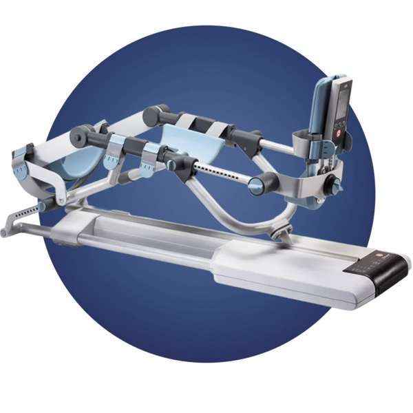

NAJAM KINETEKA ŠIBENIK
Trebate Kinetek (CPM) uređaj za rehabilitaciju koljena u Šibeniku? Nudimo dostavu na kućnu adresu, stručnu podršku fizioterapeuta i cijenu već od 10 EUR dnevno. Pokrivamo Šibenik, Vodice, Primošten, Knin, Drniš i cijelu Šibensko-kninsku županiju. Šibenik je smješten na sredini dalmatinske obale, a mi osiguravamo da medicinska oprema za rehabilitaciju bude dostupna svim stanovnicima ovog područja.
Javite nam se na WhatsApp
Kinetek uređaji za najam u Šibeniku
Pokrivamo Šibenik i cijelu Šibensko-kninsku županiju uključujući Vodice, Primošten, Knin i Drniš. Šibenik je važan dalmatinski grad koji zaslužuje pristup modernoj rehabilitacijskoj opremi bez dugih čekanja na termine u bolnicama. Svi naši uređaji su servisirani, dezinficirani i spremni za korištenje od prvog dana.
Kinetek za koljeno
Za rehabilitaciju nakon operacije koljena, ugradnje proteze ili artroskopije. Najčešći uređaj koji iznajmljujemo pacijentima u Šibeniku.
Kinetek za kuk
Za pacijente nakon ugradnje umjetnog kuka. Uređaj pomaže u povratu opsega pokreta i ubrzava oporavak kod kuće.
Kinetek za lakat
Za rehabilitaciju nakon operacije lakta ili prijeloma. Kontrolirano pasivno razgibavanje vraća pokretljivost zgloba lakta.
Kako iznajmiti Kinetek u Šibeniku?
Cijena najma kineteka u Šibeniku
Za kratkotrajno korištenje. Minimalni period najma iznosi 10 dana. Idealno za kraće rehabilitacije.
Najčešća opcija za pacijente u Šibeniku nakon operacije koljena. Rehabilitacija traje 4 do 8 tjedana.
Za produženu rehabilitaciju ili medicinske ustanove u Šibensko-kninskoj županiji.
Zašto najam kineteka kod nas u Šibeniku?
Brza dostava
Kinetek uređaj dostavljamo na područje Šibenika unutar 24 sata. Šibenik je odlično povezan autocestom.
Podrška fizioterapeuta
Uz svaki najam dobivate stručnu podršku fizioterapeuta koji vam pomaže s uputama i praćenjem rehabilitacije.
Povoljne cijene
Cijena najma od 10 EUR dnevno. Puno povoljnije od kupovine uređaja koji košta nekoliko tisuća eura.
Servisiran uređaj
Svi uređaji su redovito servisirani i dezinficirani. Isporučujemo samo provjerenu i funkcionalnu opremu.
Pokrivamo cijelu županiju
Osim Šibenika dostavljamo i u Vodice, Primošten, Knin, Drniš i sva ostala naselja u županiji.
Besplatno preuzimanje
Po završetku najma organiziramo besplatno preuzimanje uređaja s vaše adrese. Bez dodatnih troškova.
Rezervirajte Kinetek u Šibeniku već danas
Jednostavno, sigurno i bez skrivenih troškova. Javite nam se i započnite rehabilitaciju kod kuće.
Javite nam se na WhatsAppČesto postavljana pitanja o najmu kineteka u Šibeniku
Da, nudimo najam Kinetek uređaja u Šibeniku i cijeloj Šibensko-kninskoj županiji. Dostavljamo uređaj direktno na vašu kućnu adresu ili u ordinaciju.
Cijena najma kineteka kreće se od 16 EUR po danu za dnevni najam, dok mjesečni najam iznosi 200 do 300 EUR ovisno o vrsti uređaja. Za dugoročni najam kontaktirajte nas.
Kinetek uređaj dostavljamo na područje Šibenika unutar 24 sata od potvrde narudžbe. Šibenik je odlično povezan autocestom A1.
Da, osim Šibenika pokrivamo i Vodice, Primošten, Knin, Drniš i sva ostala naselja u Šibensko-kninskoj županiji. Dostava je uključena u cijenu najma.
Ne, uputnica nije potrebna. Dovoljno je nazvati nas i dogovoriti detalje. Preporučamo konzultaciju s liječnikom o programu rehabilitacije.